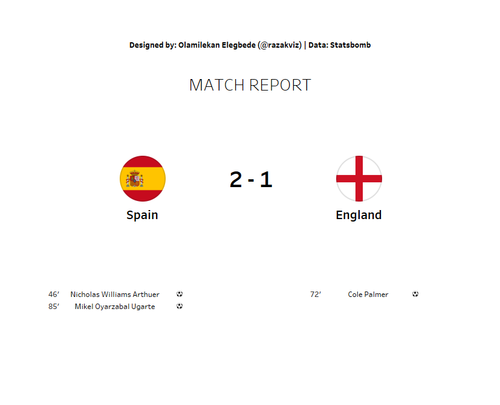

Men's EUROs 2024 Finals Report — Spain vs England
A comprehensive automated post-match tactical report for the UEFA Euro 2024 Final, covering match dynamics, xG, passing networks, shot maps, and individual player performances.

Overview
The UEFA Euro 2024 Final between Spain and England was one of the most watched football matches of the year. Spain claimed the trophy 2-1, but the tactical story behind the result was more nuanced than the scoreline suggested.
This project demonstrates an automated post-match reporting pipeline — pulling Statsbomb event data for the final and generating a complete analytical report covering all key tactical dimensions of the match.
Report Sections
Match Summary & xG Timeline
An xG flow chart shows how match momentum shifted across 90 minutes — identifying the periods where each team created their best chances and how the actual scoreline compared to expected outcomes.
Shot Maps
All shots from both teams are plotted on a pitch view, colour-coded by outcome and sized by xG value — showing where quality chances were created and how goalkeepers were tested.
Passing Networks
Player passing connections are visualised as a network graph for each team, showing which players connected most frequently and the structural shape each team adopted during possession phases.
Player Performance Metrics
Individual player statistics — touches, passes completed, key passes, dribbles, and defensive actions — are summarised for both squads in a structured performance table.
Automation Pipeline
The report is built using a fully automated Python pipeline. Given a match ID, the system fetches all Statsbomb event data, computes all metrics, generates all visualisations using mplsoccer, and assembles the final report — with no manual steps required between data pull and output.
The pipeline is designed to be reusable for any match in the Statsbomb open data catalogue, making it a general-purpose tool for post-match reporting beyond this specific final.
Explore the Project
Read the full match report or explore the automated pipeline on GitHub.